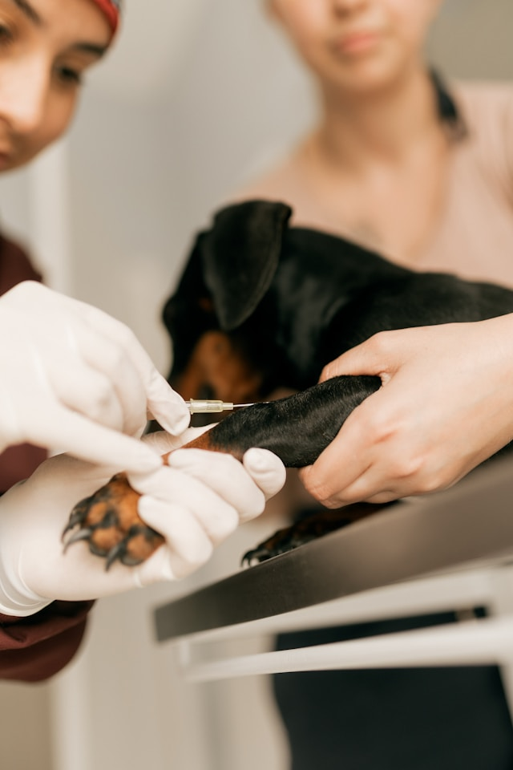

HVEO+ combina medicina general con especialidades rotacionales, llevando atención veterinaria de alto nivel cerca de ti.
Desde chequeos de rutina hasta diagnósticos avanzados, cubrimos todas las necesidades de salud de tu compañero.
Desde crear tu cuenta hasta recibir recordatorios — todo el proceso pensado para tu comodidad.
Regístrate gratis en menos de dos minutos. Solo necesitas tu correo y un teléfono de contacto.
Añade el perfil de cada compañero con edad, raza, vacunas y notas de salud importantes.
Elige veterinario, servicio, fecha y hora directamente desde el portal — sin llamadas ni esperas.
Te avisamos antes de la cita y cuando una vacuna o medicación esté próxima a vencer.
Cardiología, dermatología, oncología y más — en Añasco, sin necesidad de viajar 2–3 horas a San Juan.
Gestiona los records de tus mascotas, recibe recordatorios de vacunas y agenda citas desde cualquier dispositivo.
Trabajamos con veterinarios locales como centro de referidos, fortaleciendo toda la red veterinaria regional.
Familias del oeste de Puerto Rico que confían en HVEO+ para el cuidado de sus mascotas.
"Llevé a mi perrita Luna después de un susto y nos atendieron rapidísimo. El portal me llega un recordatorio cuando se acerca su próxima vacuna — ya no tengo que estar pendiente de fechas."
“Diache, por fin un veterinario con especialistas aquí en el oeste, puñe**. Mi gato Tommy necesitaba un cardiólogo y ahora resolvemos to’ aquí mismo en Añasco. Así sí.”
"El trato es excelente y el portal hace todo más fácil. Pude agendar la cita de mi conejo desde el celular en la noche, sin tener que esperar a que abrieran al otro día."

🐕Mantener al día las vacunas de tu mascota es una de las mejores formas de proteger su salud...
Los sonidos fuertes pueden causar estrés severo en perros y gatos. Aprende cómo ayudarlos...
Perder a un compañero peludo es una experiencia devastadora. Hablemos de cómo atravesar este proceso...
Lo que más preguntan las familias que se acercan a HVEO+ por primera vez.